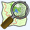

Overlay:
none
--
Loading JS
Geo Location
Search

Help
Map Compare
Please enable JavaScript in your browser. Thanks!
Please wait...
Choose map type:
none
Choose map type:
none
zoom=
permalink
share
© 2017
BBBike
.org
&
Geofabrik
GmbH
-
map data
(©)
OpenStreetMap.org
contributors
-
extracts
-
help
-
contact
-
console
-
fullscreen
 Loading JS
Geo Location
Loading JS
Geo Location